WOMEN'S
exhibit [POWER]
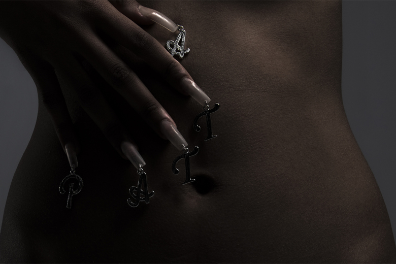PATTA
Inventive women often incorporate Patta pieces with their effeminate attire as well, displaying it from a creative fashion perspective on the brand’s streetwear-type of feel, in a way women wear it.
exhibit [RESPECT]
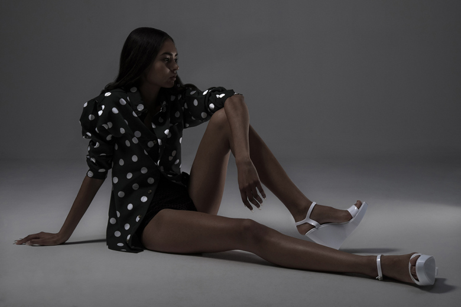PATTA
The start of a revolution.
PATTA
Hollywood Babylon SS2015
Made of regular 180 gram soft handle jersey and 100% cotton, this style comes in four colors: White, Bottle Green, Navy and Melange Grey.
exhibit [SS15-CRW]
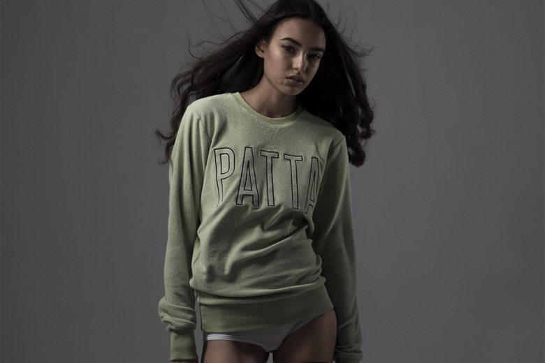PATTA
With a tighter twist of the yarn, this 100% cottton 300 gram jersey has a heavier feel and also features a panel below the Soulful puff print artwork.
Commissioned for All.
exhibit [POWER]
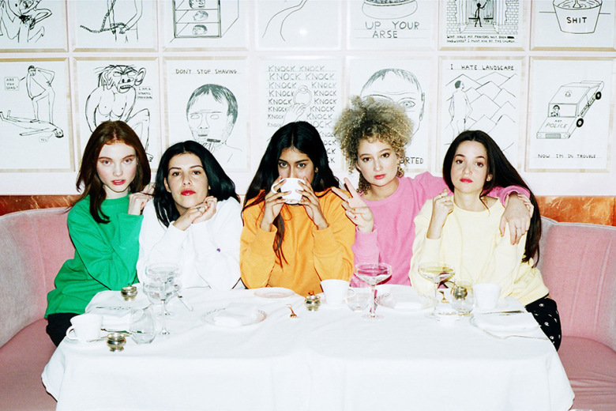CHAMPION
Iconic Reverse Weave, pulling retro silhouettes from the Champion archive, resulting in pieces such as primary color sweatshirts, hoodies and joggers, as well as that all-over print matching tracksuit.
exhibit [CAMO UTILITY]
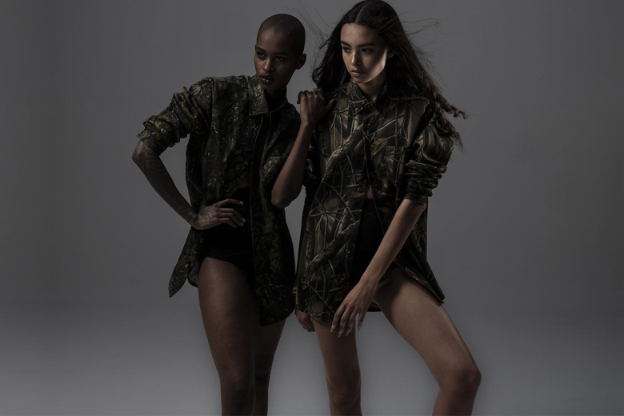PATTA
Both embroidered on the chest with a soft finish. As with the Shout Creweck Sweaters, this sweater is made from a lighter 300 gram, 100% cotton jersey.
exhibit [PLAY]
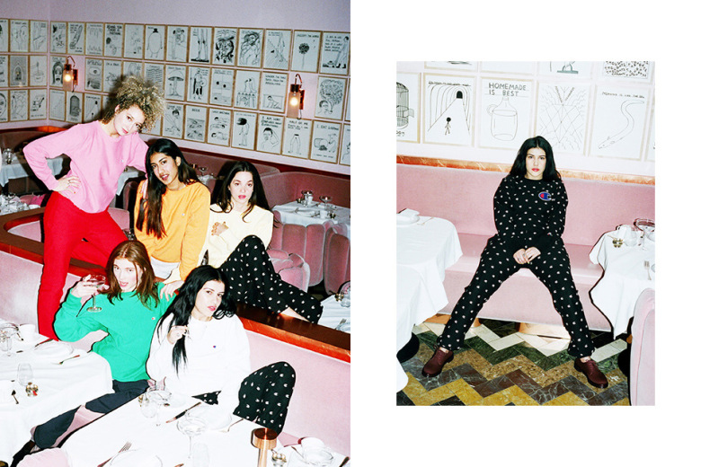 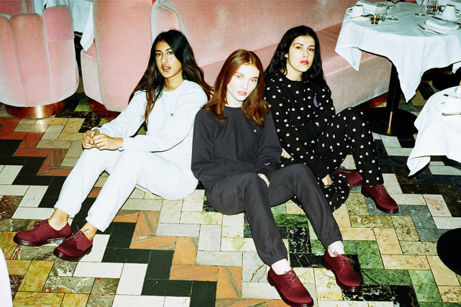CHAMPION
Girls Rule the World.
exhibit [DREAMS]
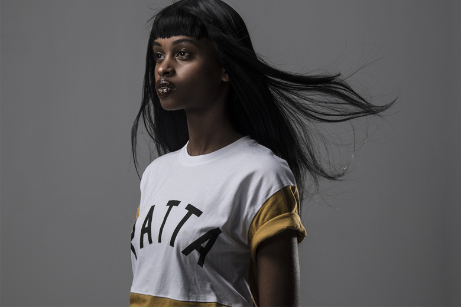 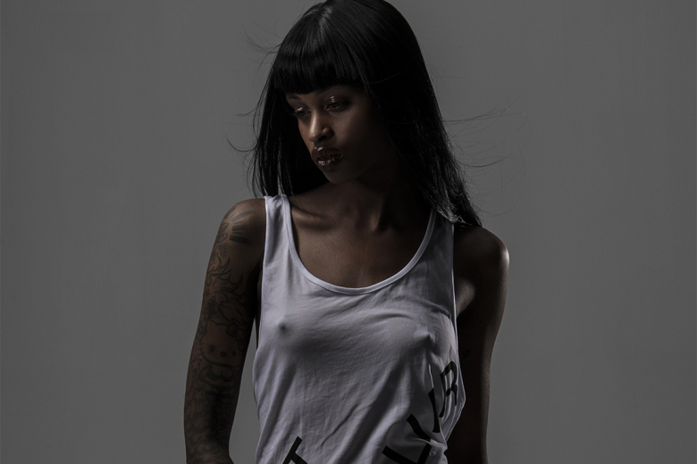PATTA
The artwork represents the team, its cohesiveness and accumulated strength. Available in three colors: White, Melange Grey and Mustard.
exhibit [reverse weave]
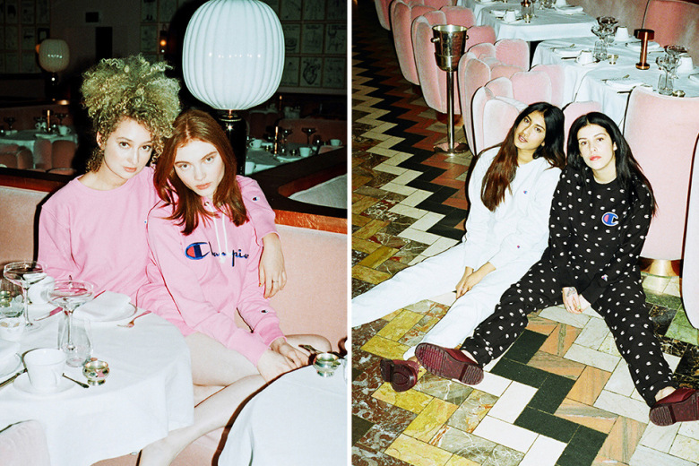 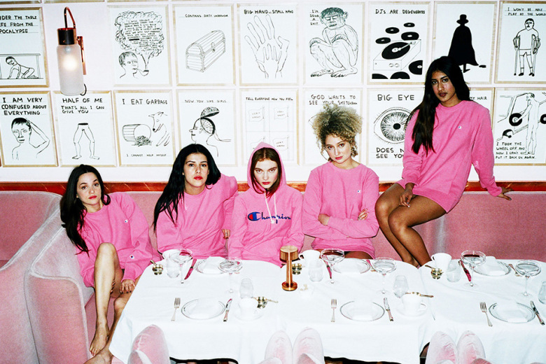CHAMPION
SS 2015
CHAMPION
SS 2015 No Flex Zone.